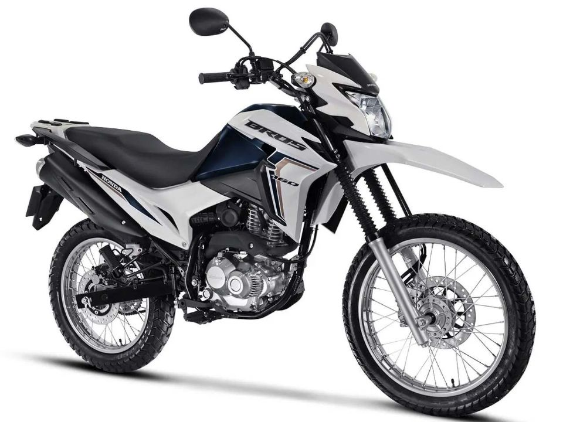

Honda Bros 160 Vale a Pena em 2026?

Introdução à Honda Bros 160
A Honda Bros 160, também conhecida como NXR 160 Bros, é uma moto trail de entrada que mantém sua popularidade no Brasil em 2026. Muitos motociclistas se perguntam: Honda Bros 160 vale a pena 2026? Sim, para uso misto (urbano e off-road leve), ela oferece resistência, economia e versatilidade. Lançada como evolução da Bros 150, a versão 2026 inclui injeção eletrônica PGM-FI, freios CBS e design atualizado, competindo com Yamaha Crosser 150 e Suzuki Haojue DK 150.
Com motor monocilíndrico de 162cc FlexOne, entrega 14,7 cv de potência (etanol) e torque de 1,60 kgfm, ideal para deslocamentos diários e estradas de terra, com partida elétrica e transmissão de 5 marchas para trocas suaves.
Preço da Honda Bros 160 em 2026
O preço sugerido da Honda Bros 160 ESD 2026 é R$ 20.490 (sem frete), variando para R$ 21.000 com impostos em diferentes regiões. A versão básica (ES) custa R$ 19.990. Comparada a usadas (R$ 15.000-18.000), a nova vale pela garantia de 3 anos e atualizações como painel digital. Para quem roda em terrenos irregulares, Honda Bros 160 vale a pena 2026 pelo custo-benefício, com depreciação baixa (~10% anual) graças à alta demanda no mercado de revenda.
O modelo inclui rodas raiadas de 19" dianteira e 17" traseira, tanque de 12 litros e peso seco de 120 kg, facilitando manobras.
Consumo e Desempenho no Dia a Dia
O consumo médio é de 35-40 km/l na cidade (gasolina), alcançando 45 km/l em estradas, graças ao sistema Flex e ciclística eficiente. Isso faz Honda Bros 160 vale a pena 2026 para economia, com autonomia de ~450 km. Velocidade máxima ~110 km/h, com aceleração adequada para ultrapassagens seguras. A suspensão (telescópica dianteira e monoamortecida traseira) absorve impactos em buracos e terra, enquanto a altura do solo de 247 mm permite off-road leve sem raspar.
Para uso misto, o conforto é bom com posição ereta e banco bipartido, mas vibrações em alta rotação podem ocorrer em longas viagens.
Manutenção e Custos Anuais
A manutenção é simples e barata: revisões a cada 4.000 km custam R$ 200-350 em autorizadas. Custos anuais (peças, óleo, pneus) ficam entre R$ 800-1.200 para 10.000 km. Peças como filtro de óleo (R$ 40) e corrente (R$ 150) são acessíveis, com rede ampla da Honda. Sem falhas crônicas, a durabilidade excede 100.000 km com cuidados. Para trabalhadores ou entregadores, Honda Bros 160 vale a pena 2026 pelo baixo custo de propriedade, incluindo seguro ~R$ 600/ano.
- Prós: Resistência off-road, economia, rede de assistência, versatilidade.
- Contras: Potência modesta para viagens longas, sem ABS em todas versões.
Comparação com Concorrentes em 2026
Vs. Yamaha Crosser 150 (R$ 19.000): A Bros vence em torque e autonomia. Vs. Bajaj Dominar 250 (R$ 22.000): A Honda é mais leve e econômica para trail. Para uso diário em estradas variadas, a Bros se destaca pela robustez e simplicidade. Teste uma para avaliar o encaixe com seu estilo de pilotagem.
Conclusão: Honda Bros 160 Vale a Pena 2026?
Sim, a Honda Bros 160 vale a pena em 2026 para quem precisa de moto resistente, econômica e versátil. Com motor flex, suspensão alta e manutenção baixa, é ideal para uso misto. Consulte concessionárias para promoções e dados atualizados. (Baseado em análises 2026; valores aproximados.)
Outras Notícias
Vale a pena comprar a Bajaj Dominar 250?